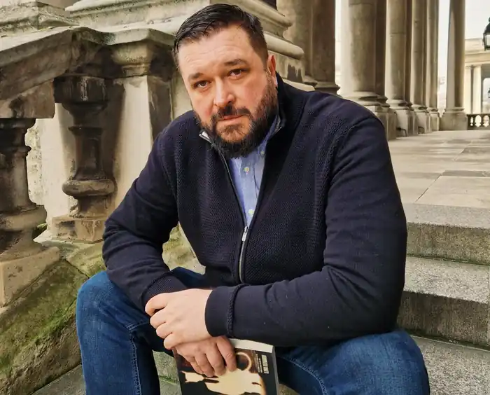

Іліян Кузманов (Илиян Кузманов) — британсько-канадський письменник болгарського походження, громадський діяч, журналіст і соціальний підприємець. Його творчість часто поєднує магічний реалізм з політичною та історичною белетристикою і в основному присвячена російському тоталітаризму та східноєвропейській боротьбі за свободу, переходам між східною та західною цивілізаціями, ставлячи велике питання про особистість та її боротьбу проти тоталітарної соціалістичної держави. Своєю дебютною книгою "Зустрінеш Будду — вбий його!" (оригінальна назва: "If You Meet Buddha, Kill Him!") (оригінальна назва: "Якщо зустрінеш Будду — вбий його!") — він став першим болгарським автором , який увійшов до топ-20 бестселерів Amazon (15-те місце) . Він є засновником Project Ezo (частина Angel Social Group — першого болгарського міжнародного соціального бізнесу, який отримав нагороду в Лондоні, Великобританія). Його соціальна діяльність у Болгарії спрямована на підтримку жінок, які постраждали від насильства та торгівлі людьми, дітей-біженців, поліпшення умов утримання у в'язницях, боротьбу з корупцією та несправедливістю. Власниця незалежного ЗМІ, основна увага приділяється політичному аналізу, правам людини, ліберальним ідеям та способу життя.
Народився 3 лютого 1979 року в Пазарджику, Іліян Кузманов є нащадком надзвичайно заможної та ренесансної родини з Калугерово, Пазарджикська область, Болгарія. За свій внесок у болгарську історію та місцеву громаду родина Іліяна Кузманова вшанована меморіалом. Він був встановлений на ратуші, де його прадід був останнім мером за часів Османської імперії і першим мером після здобуття незалежності в 1878 році. Старовинний дворянський рід купців, виноробів і військових з болгарським і турецьким корінням, що сягає, за легендами, імператора Баязида II. Сім'я будувала громадські центри, школи, церкви і служила місцевій громаді до того, як комуністичний режим націоналізував все їхнє багатство. Кузманов вивчав право у Пловдиві, Болгарія. У Канаді — історію та економіку в Університеті Конкордія, Монреаль. Він навчався у проф. Мартін Сінгер, член команди Генрі Кіссінджера. У 2011 році переїхав до Лондона, Англія, де створив соціальний бізнес Angel Social Group. У 2014 році заснував соціальний проект Ezo в лондонському районі Ньюхем. У 2019 році заснував фонд Art Angel Foundation у Болгарії. У 2022 році разом з політиками-однодумцями з DA Болгарія створює форум для громадянських дискусій — I Love Bulgaria. Мета платформи — створити діалог між громадянами та інституціями для обговорення проблем людей, які повертаються або хочуть виїхати з Болгарії. У Канаді Іліан Кузманов бере участь у соціальному проекті з інтеграції дітей іммігрантів. Він є членом Ліберальної партії, де працює особистим помічником кандидата в мери Монреаля Жозе-Марі Мастмонако. Проект Кузманова "Езо" — це соціальна бізнес-ініціатива в Лондоні, Великобританія. Соціальний бізнес працює з бездомними людьми, виставляє та продає мистецтво бездомних. Спадщина, пізніше перенесена до Болгарії, за допомогою якої Іліан намагається продемонструвати, що мистецтво не є елітарним, не вивчається в університетах, а є вільним і його можна знайти навіть на вулиці. Єретична концепція, яка суперечить традиційному посткомуністичному суспільству, заснованому на мистецтві, що фінансується державою і працює на державну пропаганду. Проект Езо має власну незалежну безкоштовну бібліотеку з понад 3000 назв, якою також користується болгарська громада в Лондоні. Він також проводить безкоштовні курси для місцевої малозабезпеченої громади. Культурний портал Londonist, що входить до складу TimeOut, назвав Езо "одним з небагатьох місць з душею у Великій Британії", він потрапив до чартів як "одна з восьми прихованих перлин Східного Лондона". Проект Іліана Кузманова "Езо" увійшов до публікації Болгарської академії наук "Болгарська культурна спадщина в умовах міграції". У 2020 році Іліан Кузманов заснував Фонд "Арт-Ангел" для вирішення проблем, з якими він особисто зіткнувся після повернення до Болгарії, а також для захисту інших болгар, що повертаються. Основними напрямками діяльності фонду є боротьба з насильством над жінками, торгівлею людьми та корупцією. Створює відкритий культурний простір "Есолігенція", що слугує мультикультурним центром для людей різних спільнот, етнічних груп, вірувань та сексуальних орієнтацій. Серед проектів Art Angel — проект "Марія" та проект розвитку соціального бізнесу у в'язницях. В'язничний проєкт Фонду стартує у 2020 році і запозичує моделі з Англії, Норвегії та Сполучених Штатів Америки. Він був визнаний прецедентом у Болгарії як найбільший і найважливіший самофінансований проєкт соціального підприємництва в Болгарії. Він також піднімає питання про корупцію в болгарських в'язницях. Проект "Марія" названий на честь латвійської мусульманки, яка стала жертвою торгівлі людьми, що призвело до розкриття цілої мережі торгівлі людьми та наркотиками, і ставить 100 запитань про сектор НУО в Болгарії, рівень його ефективності та корупцію в сільській місцевості. Проект "Марія" сприяв заснуванню міжнародної літературної премії, учасниками якої стали письменники з Болгарії, Франції, Великої Британії та США. Пакистанські науковці використовують проекти Іліана Кузманова як модель для боротьби з корупцією та зловживаннями. Іліян Кузманов — відомий адвокат-правозахисник, який своєю роботою та соціальними проектами бореться проти путінського шовінізму та традиціоналізму, що захопили Болгарію. Він створив розважально-освітній центр для афганських дітей у таборі біженців "Військова рампа"; використовує мистецтво як мову для спілкування з дітьми в районах проживання національних меншин; Іліян також допомагає талановитим спортсменам з бідних сімей; на початку кризи COVID підтримує дорослих, митців та вчителів у Болгарії; допомагає під час COVID у відділенні невідкладної допомоги в державній лікарні "Пазарджик". Деякі з соціальних кампаній Іліана Кузманова включають такі теми, як заборона спортивного полювання, вакцинація проти COVID-19, боротьба з расизмом, домашнім насильством, торгівлею людьми та гомофобією. Боротьба з корумпованими суспільствами є основною темою у творчості Ільяна Кузманова, але вона базується на особистих соціальних битвах письменника. У 2022 році "Арт-Ангел" спільно з Національною бібліотечною мережею та муніципалітетом Пазарджика оголошує ініціативу зі збереження цифрових архівів, пов'язаних з етнологією та культурою місця, де народився Ільян Кузманов, шляхом збору та оцифрування старих фотографій. Це частина серії ініціатив Іліана, спрямованих на те, щоб продемонструвати, що оцифрування та проникнення технологій в інституції є основним способом подолання пандемічного рівня корупції та неефективності в Болгарії. На Різдво 2022 року Іліан Кузманов запустив нову ініціативу з оцифрування книжкового контенту Національної бібліотеки, створивши таким чином єдину онлайн-бібліотеку. Ініціатива виявляє проблеми та демонструє ефективну модель подолання корупції та зловживань у бібліотечній мережі, друкарнях та видавництвах країни. Angel Social Group, яка керує всіма бізнес-проектами Іліана Кузманова, є членом Social Enterprise UK — мережі соціальних підприємств в Англії, а також Британсько-болгарської торгової палати, інтегруючи кращі західні практики відповідно до болгарського середовища. Іліян Кузманов також працює як журналіст-активіст, автор міжнародних аналізів та розслідувань, пише на такі теми, як політичний аналіз та висвітлення основних подій, з основним фокусом на Росію та Південно-Східну Азію, права людини та особистісний розвиток, стиль життя, туризм та подорожі, соціальне підприємництво та соціальну діяльність. Висвітлює корупційні схеми в секторі НУО в Болгарії та в болгарських регіонах. Член Британської спілки письменників (SoA), Американської асоціації преси та Американського ПЕН-клубу. Власник незалежного веб-сайту з питань аналізу та культури "www.theangel.today". Дебютна книга Кузманова "Якщо зустрінеш Будду, вбий його!" (2021) була спочатку видана англійською мовою (If You Meet Buddha Kill Him). (2021), спочатку була опублікована англійською мовою (If You Meet Buddha Kill Him) і стала першою книгою болгарського письменника, яка увійшла в топ-20 найбільш продаваних на Amazon (досягла 15-го місця). Протягом двох років він подорожував і жив у Таїланді, М'янмі, Філіппінах, Індонезії, В'єтнамі, Індії, Китаї та Малайзії. В Індії він відвідав Далай-ламу та його особистого лікаря, а також провів певний час у Дхарамсалі, місці, де живе Далай-лама. Ці події принесли йому ненависть серед болгарських комуністів. Кузманов описує свою книгу як "глибоку і чесну духовну подорож". Книга отримала нагороди в США, а також стала фіналістом численних книжкових конкурсів. Названий "Найсексуальнішим живим письменником 2021 року" за версією популярного культурного медіа (з понад 2 мільйонами щоденних читачів) Film Daily, письменником з "найбільшим потенціалом на 2022 рік" за версією британського "Essex TV" спільно з культурним порталом Art Daily, а також "Людиною року" за версією Career TV (TV Evropa, сьогодні Euronews). Член [[Mensa]] Великобританії, він є одним з найрозумніших болгар, з IQ, що значно перевищує IQ Ейнштейна. За свою громадську діяльність у Болгарії він був нагороджений почесним "Золотим ключем". У 2021 році Іліян Кузманов організував міжнародний Балканський книжковий рок-тур, метою якого було продемонструвати, що непропагандистська література може бути послом добрих відносин у регіоні, сповненому ненависті та упереджень, у Туреччині, Румунії, Сербії, Північній Македонії та Республіці Північна Македонія. На Різдво 2021 року Іліан Кузманов безкоштовно надає свою книгу в електронному форматі болгарською мовою "як подарунок для болгарських читачів". У вересні 2022 року вийшла друком друга книга Іліана "Диявол, я знаю його!".